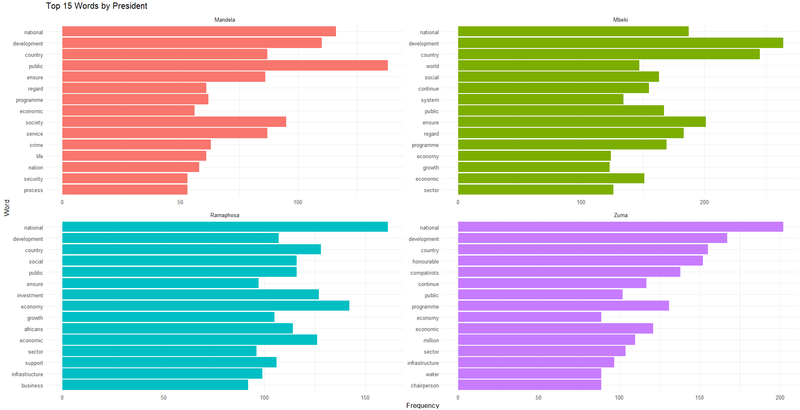

Data Science for Industry - Assignment 1
1 Introduction
The State of the Nation (SONA) address is an address by the President of the Republic of South Africa presented at the annual opening of parliament. The speeches focus on the current socio-economic and political state of the nation. In addition to this, the SONA provides the president a platform to outline the government’s key policy priorities and legislative agenda for the upcoming year, it acts as an important mechanism for transparency and accountability, it is an indicator of national concerns, data for policymakers and provides researchers with important historical context where trends are revealed as well as shifts in government priorities and policy focus.
These characteristics make SONA data interesting and useful to analyse. The overall goal for this project is to construct at least three predictive models that take a sentence of text as input and return a prediction of which president was the source of that sentence. This is essentially a classification problem where the models will be evaluated given a metric on how well they can classify this multi-class data.
2 Data and Methods
2.1 Data and Preprocessing
2.1.1 Data Collection
As the aim of this project was to create predictive models that take a sentence of text as input and return a prediction of which president was the source of that sentence, previous SONA speeches delivered by the presidents of South Africa were used as the data. These were accessed from the South African Government website (https://www.gov.za/state-nation-address) and include speeches from five former presidents: FW de Klerk, Nelson Mandela, Thabo Mbeki, Kgalema Motlanthe, Jacob Zuma, and the current president, Cyril Ramaphosa. Overall, 36 speeches were collected ranging from 1994 - 2023. The process outlining the analysis of these speeches is to follow.
2.1.2 Data Cleaning and Preprocessing
To analyse and model the SONA data, it had to be cleaned and preprocessed first. The .txt files were first read into R where they were all added to a single dataframe. The information regarding the date and year in which the speech was delivered as well as the president delivering the speech were extracted and added as columns to the dataframe. In addition to this, the dates were all formatted to the same format, all the punctuation was removed and the words in the speeches were all converted to lowercase. Finally, all numbers were removed from the text and the text was also cleaned to remove the dates that appear at the beginning/towards the beginning of the speeches.
The speeches were then converted to a ‘tidy’ format whereby the data were then processed so that all variables were in columns, all observations were in rows and every value was in a cell where a cell may only have one value. During this process of converting the speeches to a ‘tidy’ format, the process of tokenisation was also implemented which is the process of taking a text string, such as each individual speech, and decomposing it into chunks which in this case were sentences. Essentially, the speeches were broken down into sentences and converted to a format where each observation only consisted of one sentence. Lastly, the sentences about de Klerk and Motlanthe were removed as both these former presidents had only delivered one speech each, thus a limited number of sentences spoken. de Klerk had 97 sentences and Motlanthe had more with 265 but the rest of the presidents had 1664 words (Mandela), 2279 words (Ramaphosa), 2408 words (Mbeki), and 2639 words (Zuma). While these speeches could have been retained and re-sampled, they were removed so as not to negatively impact the evaluation metrics of the models.
The data were then converted to a bag-of-words model. A bag-of-words model is a representation of text that describes the occurrence of words within a document. In this case, the bag of words represented a sentence in every row. First, the sentences were tokenised into words and the stop words or words that occur commonly were removed from the ‘tidy’ dataset so that these would not add noise while analysing the data. Then the top 1000 most used words were retained and added to this bag-of-words model in individual columns. As each row represents a sentence, if the word from the column was used, the observation was given a value of one to signify this and zero if it was not used in that sentence.
Given that the data were imbalanced, a decision was also made to re-sample the data in two ways as there were still some discrepancies in length particularly between Mandela (1664 words) and Zuma (2639 words). The first method employed was up-sampling which is a technique used to increase the number of observations in a dataset by adding new instances to the minority classes. Ultimately, all presidents had 2524 sentences each after this technique was applied. The second re-sampling method employed was SMOTE which is the synthetic minority oversampling technique that aims to balance class distribution by randomly increasing minority class examples and replicating them. Using SMOTE, the data were both over-sampled and under-sampled simultaneously which resulted in 2298 - 2550 sentences per president. While these numbers are not the same, these are a fairer distribution of words.
Lastly, three bag-of-words datasets (un-sampled, up-sampled, and SMOTE) were split into training, validation, and test datasets. The training dataset was comprised of 70% of the values from the original dataset while the validation and test datasets split the 30% and resulted in 15% of the overall original values each. It was ensured that the data split also correctly represented the classes. This was done so that the data may be trained on one dataset and then fitted on the validation set to provide an unbiased evaluation of the model fit and to gauge how the chosen hyperparameters perform and lastly, the best model is chosen to be evaluated on the test set to provide the final unbiased evaluation of this model.
After the data had been cleaned and pre-processed, the predictive models were applied to the sentences.
2.1.3 Exploratory Data Analysis
Prior to any models being fit, exploratory data analysis was conducted. To visualise the data and to identify obvious errors, as well as better understand patterns within the data.
First, the number of sentences spoken by each president were counted which was mentioned in the previous sections. Then, two figures were created. One was regarding the top 15 words spoken by each president and the next was the top 15 bigrams spoken by each president. For the first figure, the following words were removed as these appeared very often across all the speeches: government, people, south, africa and african. And for the second figure the following bigrams were removed: south africa, south african, south africans, madame speaker and honourable speaker. These figures are shown below.
The first figure highlights some of the most commonly spoken words by each president, and thus, topic too. Mandela mentions ‘development’, ‘service’, ‘economic’, ‘society’ as well as ‘crime’ and ‘security’ which indicates his time as the first democratic president where the rebuilding and inclusion of everyone in the economy and society was important but crime and security were also issues at this time, stemming from social circumstances. Mbeki similarly speaks to a similar economic and development theme as does Ramaphosa. Zuma does too with the addition of water relating to the Cape Town droughts.

The bigrams provide further insight into the most spoken topics at hand. Mandela mentions ‘human rights’ as well as other people-centred phrases and economic phrases which are consistent with his time as president. Mbeki’s bigrams are, once again, economic-centred with mention of the World Cup which South Africa hosted in 2010. Zuma speaks more about different aspects of the government. And Ramaphosa mentions ‘job creation’, ‘gender based’, ‘based violence’, and ‘load shedding’ the most as these are some of the most pressing issues in South Africa at the moment while he is president.

These figures are able to aid with the distribution of the words and bigrams and allow one to see which words and bigrams are most prevalent. They also aid with the cleaning of common words that may not be stop words, may reveal important patterns and provide a contextual understanding of the data being worked with.
2.2 Methods
Three datasets were utilised in this project: the bag-of-words containing the top 1000 most used words, the up-sampled bag-of-words containing the top 1000 most used words and the SMOTE bag-of-words containing the top 1000 most used words. These were utilised in three different model types: a feed-forward neural network, a convolutional neural network (CNN) and a gradient boosted machine. In total, there were 9 models which were compared to each other through the accuracy evaluation metric which is calculated as follows:
\[ accuracy = \frac{TP + TN}{TP + TN + FP + FN} \]
where:
TP is true positive, cases model correctly predicts the positive class
TN is true negative, cases model correctly predicts the negative class
FP is false positive, cases model incorrectly predicts the positive class
FN is false negative, cases model incorrectly predicts the negative class
These 9 models were trained and validated for accurate evaluation metrics.
2.2.1 Feed-Forward Neural Network
This type of neural network is a simpler type of neural network where all information flows in a forward manner only. These perform well when solving basic problems like identifying simple patterns or classifying information. As the task at hand is fairly simple, this type of neural network was used to act as a baseline model to compare the other models to.
This neural network had one input layer, one hidden layer and one output layer. In the hidden layer, there were 124 neurons and the activation function was ReLu (Rectified Linear Unit) as this function introduces non-linearity which aids in modelling complex, non-linear relationships and has substantial gradients. A dropout layer was also added for regularisation. In this case, it was 50% which means that approximately 50% of the input units will be set to zero during training, reducing the risk of overfitting. Lastly, the output layer has four neurons as this is a multi-class classification problem with four classes as well as a softmax activation function which converts the model output into class probabilities, ensuring that the sum of the probabilities for all classes is equal to 1.
2.2.2 Convolutional Neural Network
A CNN can be described as a regularized feed-forward neural network that optimizes filters to learn feature engineering on its own. They are particularly useful for finding patterns in images to recognize objects, classes, and categories which is what we are wanting through this multi-class problem.
The architecture of this neural network was more advanced. First an embedding layer was added to the model which converts categorical data into dense, continuous vectors. This vector had ten dimensions and the length of the input sequence was 1000. Next, a dropout layer of 0.2 was added meaning the 20% of the neurons were deactivated randomly. A 1D convolution layer with 64 filters and a kernel size of 8 is applied with a ReLu activation function and then a a 1D max-pooling layer with a pool size of 2. Max-pooling is used to down-sample the spatial dimensions of the data and reduce the number of parameters. A flatten layer is added to transform the output from the previous layers into a flat 1D vector, which can be fed into a dense layer. The next layer has 32 neurons with a ReLu activation function and the last has 4 neurons and a softmax activation function again.
Both neural networks used a “categorical_crossentropy” loss as this is good for multi-class predictions and 30 epochs with a batch size of 5.
2.2.3 Gradient Boosted Machine
A GBM was also applied to the data, This is described as an ensemble method where it combines many weak models (decision trees) to create a strong predictive model. This model is quite flexible and robust to overfitting. A hyperparameter search was done for this model with a choice between 500 and 1000 trees and a shrinkage (learning rate) of 0.01 or 0.001 while the interaction depth and minimum observations in node were set to one, The final model produced was: number of trees = 1000 and a shrinkage = 0.01. The distribution chosen for the GBM was multinomial which is commonly used for multi-class variables. Cross-validation was employed to better the results of the hyperparameter search.
3 Results
Overall, 9 bag-of-words models were run:
Original neural network
Up-sampled neural network
SMOTE neural network
Original CNN
Up-sampled CNN
SMOTE CNN
Original GBM
Up-sampled GBM
SMOTE GBM
The results from all of these methods are tabulated below.
| Model | Accuracy on Test Data |
|---|---|
| Original Bag-of-Words Neural Network | 0.489 |
| Up-Sampled Bag-of-Words Neural Network | 0.523 |
| SMOTE Bag-of-Words Neural Network | 0.227 |
| Original Bag-of-Words Convolutional Neural Network | 0.271 |
| Up-Sampled Bag-of-Words Convolutional Neural Network | 0.237 |
| SMOTE Bag-of-Words Convolutional Neural Network | 0.252 |
| Original Bag-of-Words Gradient Boosted Machine | 0.452 |
| Up-Sampled Bag-of-Words Gradient Boosted Machine | 0.503 |
| SMOTE Bag-of-Words Gradient Boosted Machine | 0.497 |
From the table above, it can be seen that none of the models performed particularly well despite taking measures to remove presidents with low sentence values, using cross-validation, random searches, having a number of epochs and re-sampling the data many times.
From the simple neural network, it can be seen that the Up-Sampled Bag-of-Words Neural Network performed best with an accuracy of 0.523 with the Original Bag-of-Words Neural Network close behind with 0.489. On the other hand, the SMOTE Bag-of-Words Neural Network performed very poorly with an accuracy of 0.227.
Moving on the the CNN, while all performed poorly, the Original Bag-of-Words Convolutional Neural Network performed the best with an accuracy of 0.271. The SMOTE Bag-of-Words Convolutional Neural Network was next with an accuracy of 0.252 followed by Up-Sampled Bag-of-Words Convolutional Neural Network with a value of 0.237.
Lastly, the GBM values were greater than the CNN values with the Up-Sampled Bag-of-Words Gradient Boosted Machine performing best with an accuracy value of 0.503. Next were the SMOTE Bag-of-Words Gradient Boosted Machine and the Original Bag-of-Words Gradient Boosted Machine with accuracy values of 0.497 and 0.452, respectively. It should be noted that these values were much closer to each other compared to the neural network and CNN.
On average, the GBM model performed the best with a mean accuracy of 0.484 compared to the CNN which was 0.247, and the neural network which was 0.413. On the other hand, there did not seem to be any dataset that overtly performed better than the others. The Up-Sampled Bag-of-Words model did well in two of the prediction model types but then performed the worst in the third. This leaves both which model type was best and which dataset was best inconclusive.
Finally, the best-performing model overall which was the Up-Sampled Bag-of-Words Neural Network was evaluated on the test set reaching an accuracy value of 0.250 which was worse than its previous performance.
4 Discussion
While none of the models performed very well, it is worth discussing why some models may have performed better than others. Different models are suitable for different types of problems and these models (CNN and GBM) were chosen for their suitability of use for multi-class data, most still performed poorly especially when compared to the baseline, the simple neural network. One reason why GBM may have been the best model on average is due to its better performance on tabular or structured data. On the other hand, CNNs tend to perform better when the relationships are complex. There may have also been issues of overfitting due to improper regularisation or due to the randomness during training where running the same model with the same data multiple times might yield slightly different results due to the initial random weights and the order in which data is presented during training.
One of the other reasons why some models may have performed better may be due to data imbalance but in this project, three differently balanced and unbalanced datasets were used. However, different models respond differently to imbalanced datasets or there may have not been the need to balance the datasets for these models in the first place.
Bearing this in mind, there are a few ways this project could have been improved and it is encouraged that people furthering this research take this into account. A hyperparameter search was not conducted for either of the neural networks and because these are so dependent on the hyperparameters, future studies should aim to do this. The GBM may have performed better because a hyperparameter search was conducted but due to time constraints and low computational power, the parameters could not have been tuned to a great extent. Another pitfall may have been only using accuracy as an evaluation metric. Others such as the kappa score or sensitivity and precision values may have provided better insights into the performance of the data.
5 Conclusion
The aim of this project was to construct at least three predictive models that take a sentence of text as input and return a prediction of which president was the source of that sentence. This project successfully carried out this aim. Even though the results were not as satisfactory as anticipated, this work does aid in the understanding of how to go about this type of modelling by outlining the procedure of what was done building up to the construction of the models and the construction of the models themselves. This work also highlights which areas should be focused on for the construction of models with better evaluation metrics which is useful for future works.